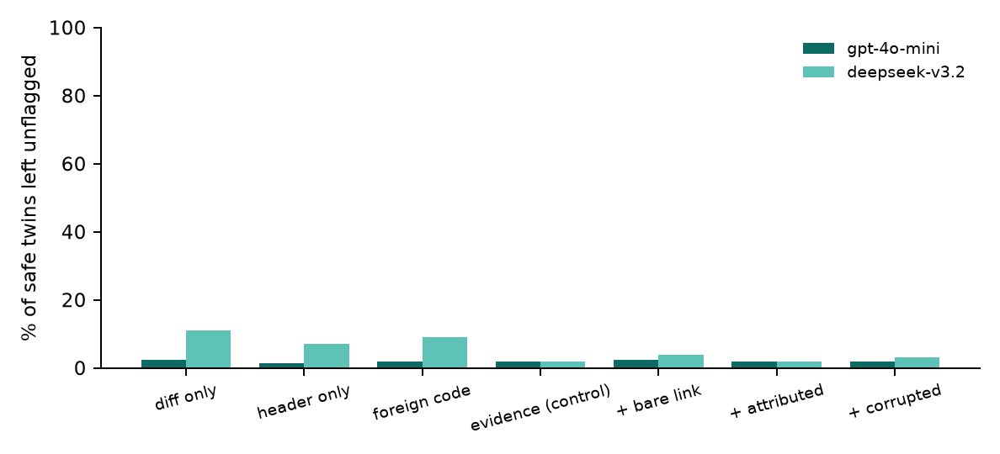
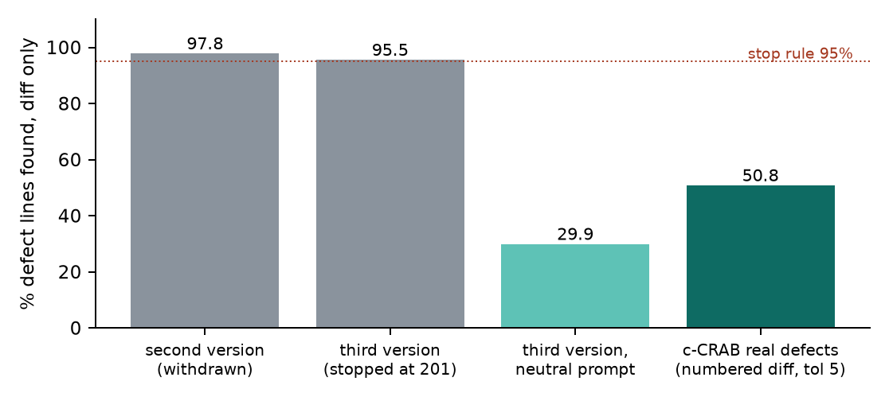
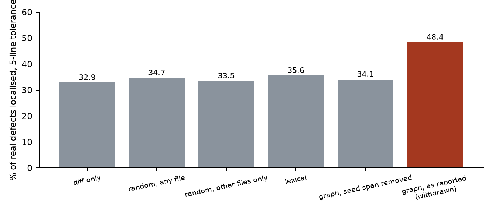

Independent researcher, Addis Ababa · tadaelshewaregagebre30@gmail.com
Systems that give a language model more of the repository during code review change which code the model sees and how its relationships are described. Before asking whether either helps, we ask whether a benchmark can measure the help at all, and answer with four diagnostics and a record. A partial-input ceiling: given only the diff, a model finds the mutated line in 93%, 97.8% and 95.5% of tasks on three successive versions of a generated cross-file benchmark, the last built after an external review had closed every known leak; the model flags most changed lines, so detection cannot separate one context condition from another. On 219 test-verified real defects the same check gives 33%, and that is the only set in this paper with headroom. An anchor-versus-evidence measurement on 291 real review comments: every one anchors on a changed file, yet 33 to 50% justify themselves with code the diff does not contain. A contrast set of safe twins, the same mutation placed where every caller in the repository tolerates it: under a prompt that presumes a defect no arm on two models leaves more than 11% of them unflagged; under a neutral prompt gpt-4o-mini leaves 82% alone from the diff, 54% when shown the caller that tolerates the change, 40% with a bare link stated between the snippets and 11% with the relation and its argument named, while foreign code of the same length changes nothing, so dependency metadata on a safe change drives false alarms in proportion to how much it says. On the stopped third-version run, showing the depended-on caller lowers precision by 14 points against the diff alone while foreign code of the same length does not, and stating the link between the snippets recovers none of it. A test-verification check: of 86 generated defects run against their repositories' own test suites, 17 are caught by an existing test. On the set with headroom, a graph-retrieval condition that appeared to localise 48% against 33 to 36% for the diff alone and for random or lexical retrieval turned out to have received the line span of the function containing the defect; with that span removed it localises 34%, and no budgeted retrieval condition in this project beats the diff alone on real defects. A held-constant-evidence experiment on dependency metadata was designed, pre-registered and run twice; both runs are withdrawn, the second after external review found five instrument defects, and the ceiling that survived their repair is why it is not run a third time. Eight claims were withdrawn on the project's own evidence; everything, including the withdrawn runs and the controls that withdrew them, is released.
A pull request changes one function. Three files away, another function relies on the behaviour that just changed. Nothing in the diff is wrong on its own terms, and a reviewer who reads only the diff cannot see the problem. Systems that give a language model more of the repository exist to close this gap, and the most elaborate of them build a dependency graph, retrieve the neighbourhood of the change, and present it to the model with its structure attached.
Two things change at once in that design. The model receives different code than it would from a plain lexical search, and it receives a statement of how the pieces relate. Published comparisons report the combined effect [1, 2]. They do not say which part is doing the work, because in an end-to-end comparison the retrieved set and its representation move together. We set out to separate them with a held-constant-evidence design: the same diff and the same snippets in every arm, and only the metadata that describes their relationships varied, from absent through scrambled, a bare link, a typed relation and a wrong pointer.
This paper reports what had to be true of the benchmark before that experiment could mean anything, and the finding that it was not. The partial-input problem is known from natural language inference [3, 4, 5]: if one part of the input already determines the answer, an experiment on the other part measures nothing. For code review the one-line version is to give the model the diff alone and see how often it finds the defect. On every generated benchmark we built it almost always did. The first version leaked through broken distractors and loose evidence; the second through line numbers in its labels, a resolver that accepted any same-name import, distractors that changed the syntax tree, and a defect that sat last in the diff six times in ten. An external review found those, we closed each one with a test, regenerated the benchmark from the same repositories, and the diff alone still found the defect line in 95.5% of tasks, because the model flags most changed lines and the one semantic change is always among them. That is the result of this paper: a benchmark can pass every construction check and still be unable to measure context, and the check that tells you is cheap enough to run first.
Three further diagnostics say where context could be measured and what else a benchmark needs. On 291 test-verified defects from a mined review benchmark [6], every reference comment anchors on a file the pull request changed, and a third to a half of them refer to code the diff does not contain, so where a comment sits is not where its justification lives; on those defects the diff alone localises a third, which leaves room. A contrast set [7, 8] of safe twins, the same mutation placed where every caller in the repository tolerates it, measures whether any context makes a model say a change is safe; under a neutral prompt it shows the opposite, that the caller which proves the change safe, and every statement about the dependency on top of it, makes the model flag it. And running each generated defect against its repository's own test suite says how many a test would have caught: a fifth of those that could be run.
On the one set with headroom we had a retrieval result: graph retrieval that reaches the depended-on caller appeared to localise 48% of the real defects against 33 to 36% for the diff alone and for random or lexical retrieval at the same budget. An external reviewer noticed that the graph condition's payload, alone among the conditions, carried the line span of the function containing the defect. A control that removes the span localises 34%, within noise of the diff. That result is withdrawn here, with the control beside it, and what stands on real defects is a null: no budgeted retrieval condition in this project beats the diff alone. A search-trigger test on a bare tool-equipped model closes the frame: asked to review a diff it searched in none of forty tasks; told the defect depended on another file, it searched in all forty.
The contributions are the four diagnostics with their results, the generated benchmark with the generator, the audit and the twins that an experiment on context would need, the controlled null on real defects, and the record: eight claims made and withdrawn on the project's own evidence, the last three being the held-constant experiment on each generated benchmark and the retrieval result. Each measurement is stated with what it does and does not support.
AACR-Bench [2] evaluates automated review on 1,505 issues and reports that context granularity, with arms for diff, file and repository, and the choice of retrieval method both change performance, with effects that vary by model and language. It labels 233 of its 1,505 issues as repository-level, about 15%, so most of its ground truth is resolvable from the changed file alone. c-CRAB [6] converts human review comments into tests that fail before the fix and pass after it; its release carries 485 reference comments on 339 Python pull requests at the test-verified stage, of which 291 meet the filters in 3.6; it evaluates finished reviewers rather than context strategies, and we reuse its defects for a secondary measurement of anchor scope against evidence scope. SWR-Bench [9], CodeFuse-CR-Bench [10] and MCR-Bench [11] broaden the task to whole pull requests and multi-round review; MCR-Bench includes a long-range dependency miss error category, which names the failure we study without isolating its cause. SWE-PRBench [12] evaluates 350 pull requests and finds that all eight frontier models degrade monotonically as same-file context is appended to the diff, which its authors call attention dilution; its Type3_Latent class, 26% of defects, resides in files that import the changed files. Together these benchmarks establish that cross-file defects exist, that more raw context does not reliably help, and that retrieval choice matters, but in each the content of the context and its representation move together. This paper adds the check that has to precede any such comparison, a partial-input ceiling measured on three versions of a generated cross-file benchmark whose evidence is verified on the caller's AST, together with an anchor-versus-evidence measurement on the 291 c-CRAB defects and a controlled retrieval comparison on them in which no budgeted selection beats the diff.
RepoGraph [13] builds a repository-level graph of definitions and references and retrieves ego-graphs around matched entities for agents; our graph construction follows it. GRACE [1] couples graph-guided retrieval with structural fusion of the retrieved subgraph into the prompt and reports a gain of 8.19 exact match on repository-level completion; because the retrieved set and its structural encoding change in the same step, the gain cannot be attributed to either alone. DyRetriever [14] and LARGER [15] report further gains from graph-guided methods on generation and localisation, which shows that graphs help when the bottleneck is finding the right code. GrepRAG [16] reports that ripgrep over the repository matches or beats graph retrieval on CrossCodeEval, and Agent Retrieval Bench [17] finds that no retriever dominates, although any retrieved seed beats a random non-gold seed. These results bound the retrieval question on both sides: a graph can select better evidence, and a cheap lexical search can often select it just as well. None of them separates the selection of evidence from the statement of how the selected pieces relate. This paper reports a selection comparison on real review defects with random-code and lexical controls at a fixed budget, in which graph retrieval appeared to win by fifteen points until a span it alone had received was removed, and releases the held-constant design that would separate selection from description once a benchmark can carry it.
Outside code, the evidence that prompted models read graph structure is mixed. On text-attributed graphs, "When Structure Doesn't Help" [18] finds node text alone strong and structural encodings marginal or negative. "Actions Speak Louder than Prompts" [19] uses shuffled-adjacency controls and finds that prompting-mode models lean on node features while a code-execution mode does use the structure; our scrambled control follows the same logic. "Lost in Serialization" [20] shows that graph reasoning is not invariant to node labelling or encoding, and [21] traces part of this to RoPE-induced attention decay between nodes that are adjacent in the graph but distant in the linearisation. GraphSOS [22] and GraphDO [23] show that serialisation order alone moves accuracy, with GraphDO reporting 89.43% under BFS order against 78.36% under random order. For code, "Representation Matters" [24] reports that prompts built from AST and PDG views beat raw source on vulnerability reasoning, 83.2 against 53.5; there the structural view replaces the source, so the comparison measures a change of content as much as a change of representation. Our arms add metadata to constant content, so the two designs answer different questions, and we read that result as a ceiling on what structure can carry rather than as a measurement of its marginal value. This paper's held-constant design was built to ask the same question for review, with two serialisations, a comprehension probe and validated judges; its two runs are withdrawn with the benchmarks they ran on, and what is reported is the diagnostic that gates it.
"Context Length Alone Hurts" [25] shows that padding a prompt with irrelevant text degrades performance independently of the task. RepoReasoner [26] finds that longer context is not consistently better and that models struggle on cross-file reasoning even with oracle context, so perfect evidence does not guarantee the right inference. "When Retrieval Hurts Code Completion" [27] identifies cases in which retrieved context lowers accuracy. Two review-specific results pull in different directions. "Measuring and Exploiting Contextual Bias in LLM-Assisted Security Code Review" [28] finds that non-code metadata can override the semantic content of the code, which is the mechanism by which corrupted dependency metadata could cause harm. "Can Adversarial Code Comments Fool AI Security Reviewers" [29] finds that adversarial comments did not reduce detection. Neither study varies structural metadata about the code under review while holding the code fixed. This paper adds, on real defects, random-code controls at the same budget drawn from the same repository and from other files only, and a control that strips a location hint from the one condition that carried it, so that reaching the dependent code can be told apart from adding tokens and from being told where to look; and it reports that cosmetic distractors in a generated diff do not prevent a model from finding the one semantic change.
Whether an agent looks for a dependency on its own depends on the harness. CodeCompass [30] reports that claude-sonnet-4-5 made zero tool calls in 58% of trials despite an instruction to search, and that a trailing checklist raised this to 100%. "Agentic Code Review in the Terminal" [31] finds that harnessed products such as Claude Code and Gemini CLI take 5.5 to 7.5 exploration steps unprompted, and OpenCodeReview [32] offers an open implementation of such a reviewer. Any claim that agents do not search therefore has to be scoped to a bare tool-equipped model. For ground truth, CR-Bench [33] mines 584 bug-inducing pull requests from SWE-bench fixes with an SZZ-style procedure, and Song et al. [34] characterise 280 Java regressions, including compatibility errors in which a correct change violates an assumption held elsewhere in the repository; AgentSZZ [35] automates the mining step with an agent. These are the prior art for mined cross-file regressions and the natural external check on a generated benchmark. This paper adds a search-trigger test on a bare tool-equipped model, scoped as above, and relates its generated cross-file defects to the mined compatibility class rather than replacing it.
Three results from 2026 bear directly on the twin finding and the judge. "Measuring and Exploiting Contextual Bias in LLM-Assisted Security Code Review" [28] shows, on 250 CVE and patch pairs across six models, that a natural-language assertion that code is safe collapses detection, from 97% to 4% for gpt-4o-mini, while an assertion that it is buggy barely moves it. Our twins vary the caller shown, not text about safety, and Section 4.3 reports whether a tolerant caller lowers the model's willingness to flag. "Are LLMs Reliable Code Reviewers?" [36] finds that asking a model to explain raises its misjudgement of correct code, which bears on any twin result under a prompt that presumes a defect. Matched-pair designs in modernisation [37] and vulnerability detection [38] score a pair correct only when both members are, and report pairwise accuracies near 0.1; our twins are the caller-context version of that design, verified on the syntax tree, and we report the twin half separately because the pairs are matched by mutation kind rather than by function. "Bias in the Loop" [39] shows that model judges flip on presentation cues with code unchanged; the results reported here use no model judge. This paper adds a twin benchmark whose safe member is safe by construction, checked across every file of the sampled repository rather than by annotation.
The question we set out to answer is whether telling a model how retrieved code is connected helps it review a change, once the code itself is already in front of it. Prior comparisons cannot answer this because retrieval and representation change together. The design that can, holding the snippets constant and intervening only on the metadata that describes their relationships, needs a benchmark on which the diff alone does not already give the answer. This section describes the benchmark, the twins, the four diagnostics that test whether the benchmark can carry the experiment, and the real-defect set on which a retrieval result is reported. The held-constant design itself is described briefly in 3.5, because its two runs are withdrawn and the diagnostics are the reason.
A reviewer receives a pull-request diff and must report defects as a list of (file, line, message). Each task contains exactly one defect, introduced by a mutation in one file, that is wrong only because of an assumption a different file makes. The diff also contains three harmless edits, so the reviewer must say which change is wrong rather than that something is.
Tasks are generated from 39 production repositories at a fixed commit, each sampled to at most 300 production files. For every public function with a caller in another file, the generator attempts one of five mutations and keeps the task only when the caller's syntax tree demonstrates the dependency the mutation breaks:
| Kind | Mutation | What the caller must contain |
|---|---|---|
exception_type | raise A → raise B | a handler that catches A and not B, enclosing the call |
none_sentinel | return None → return -1 | a comparison of the call's result with None |
default_flip | p=True → p=False in the signature | a call that omits p, positionally and by keyword |
tuple_order | return a, b → return b, a | an unpacking assignment of the call's result |
empty_to_none | return [] → return None | iteration over, list() of, or len of the call's result |
Calls are resolved through imports: a bare name imported from the defining module, or re-exported from it through package __init__ files followed to three levels, or module.name after a module import. A same-name import from any other module is not a call to the mutated function. Attribute calls on arbitrary objects are not matched, which excludes most methods and removes name collisions between unrelated functions called run or write. Each task records the verified caller line and the argument of the dependency: the exception type, the parameter name, the unpacked names.
Distractors are rewrites that leave the file's syntax tree identical: a change of string quote style in either direction, redundant parentheses around a return value or a right-hand side, a spacing change. Each is applied to a copy of the whole file and rejected unless the tree is unchanged. Three are chosen per task from a window around the defect whose centre is jittered and whose split above and below the defect is seeded, so the defect's position among the four hunks is close to uniform: in the third version it is last in 28% of diffs. The diff lists the four hunks in line order with nothing marking which is which. Where the generator names a snippet, in the metadata blocks of 3.5, it uses the file stem and the enclosing function, never a line number, because the diff shows line numbers too.
The third version holds 277 defects from 37 repositories: 144 default flips, 91 tuple reorderings, 27 None sentinels, 8 exception types and 7 empty-to-None. An audit script re-checks every released task with the generator's own resolver and tree comparison, following re-exports through the cached repository: 0 of 277 have a caller import that does not resolve to the mutated module, 0 have a distractor that changes the tree.
Two earlier versions are withdrawn. The first located evidence by a regular expression within eight lines of any same-named call, which demonstrated the dependency in roughly a third of tasks, and its distractor rewriter broke docstrings in 145 of 204 tasks, so a model that flagged a syntax error was scored as a false positive. The second was audited after an external review on 26 October 2026 and had five defects: its metadata labels carried the mutated line's number, which the diff also shows; its resolver accepted a same-name import from any module, in 36 of 229 tasks; 25 of its 150 twins had a dependent call in one of the two files shown; 91 of its 650 distractors changed the syntax tree, 639 of the 650 were quote rewrites, and the defect sat last in the diff in 62% of tasks; and an unparseable reply was scored as correctly silent. Each has a pinned test in the artifact. The present generator was written against both lists.

A twin is the same surface mutation as a defect task placed where no caller depends on what changed: a flipped default that every call site passes explicitly, a changed exception type that no enclosing handler catches. Safety is checked repository-wide, not on the two files shown: every non-test file in the pool is scanned for a bound call to the function, or an attribute call of the same name, that the kind's verifier would accept, and the mutation is rejected as a twin if any is found. The third version holds 165 twins from 33 repositories, 149 default flips and 16 exception types; the audit finds 0 with a dependent call. A twin task is rendered like a defect task, with the same distractors and, in the evidence arms, a caller window that shows a call the change does not break. Correct on a twin means not flagging the mutated line.
Partial-input ceiling. The model is given the diff alone and must report defects; a hit is a finding whose line equals the mutated line, with no tolerance. The rate is reported for every version of the benchmark and for the real-defect set of 3.6. A rule for the third version was fixed before its run: if the diff-only hit rate was 95% or higher, the remaining arms would not be run and only the ceiling would be reported; the target was under about 80%.
Anchor versus evidence. For each real reference comment, experiments/evidence_scope.py records where the comment is anchored (a changed file, a changed line) and whether its text refers to anything the diff does not contain, under a strict reading (a named identifier, file or behaviour absent from the diff) and a loose one (any reference beyond the changed lines). Every decision carries its reason.
Safe twins. As in 3.3; the clear rate per arm is the diagnostic, compared between the diff-only arm and the arm that shows the tolerant caller.
Test verification. experiments/verify_by_tests.py clones each repository at the benchmark commit, installs it, selects the tests nearest the mutated module, runs them before the mutation, applies the mutation and runs them again. A defect is test-verified when a test that passed before fails after. The funnel, including repositories that could not be installed and modules with no passing test, is reported in full.
The held-constant-evidence design fixes an evidence set per task, a 25-line window around the mutated line, a 25-line window around the verified caller line and a decoy function from the definition file, and renders it identically in every arm that receives it. Arms differ only in a metadata block: absent; scrambled so that it has the same shape and says nothing true; a bare link; a typed relation; a typed relation with its argument; or a relation with its target moved to the decoy. Two further arms replace the snippets with length-matched functions from repositories outside the benchmark, or remove them while keeping the metadata section. The primary comparison, bare link against scrambled control on a metric that asks whether the message explains the defect through the caller, was recorded in the repository (commit 71fb660, 1 October 2026) before the second version's runs. Both versions' runs are withdrawn with the benchmarks they were run on. A third run was conditional on the diagnostic in 3.4, and Section 4.1 reports why it was stopped after one arm set. The runner, arms, serialisations, judges and analysis remain in the artifact for a benchmark that passes the gate.
c-CRAB's paper reports 184 pull requests and 234 comments; its public release holds 410 instances and 595 comments, and its stage-three test-verified file holds 339 Python pull requests with 485 reference comments. We use that file and the test-generation archive, downloaded on 27 August 2026, and filter in four steps: 477 comments carry a line; 340 of those carry a generated test that fails before the fix and passes after it; 291 of those sit in a source file of a supported language, and these are the set for the anchor-versus-evidence measurement; 246 remain after diffs longer than 40,000 characters are dropped (195 pull requests). The diff-only and graph conditions returned an answer for 244 of them, the random and lexical conditions for 228 and 224, so 219 defects are paired across the four conditions and 218 across five once the random-other-files control is added. Every number in Section 4.5 is on one of those two paired sets.
The system prompt is one text for every arm and both benchmarks. It tells the model that humans have reviewed the diff and found real problems, to assume there is something to find, and the output contract asks for best candidates even when uncertain while allowing an empty list. The sentence was written for the real-defect runs, where every diff carries a confirmed defect, and was kept for the generated benchmark and the twins so that arms differ only in the metadata. It pushes the model toward flagging, so the twin clear rates in 4.3 are a floor on what a neutral prompt would give. A neutral variant that drops the sentence and states that an empty list is a correct answer is implemented (--neutral-prompt); it has not been run.
The ceiling and the test-verification check use gpt-4o-mini; the twins use gpt-4o-mini and deepseek-v3.2; the search-trigger test uses gemini-2.5-flash; all at temperature 0.1 through one API. Tasks are paired across arms. The reported interval is a 95% percentile bootstrap that resamples repositories rather than tasks, because several tasks share a repository and a definition file, with the task-resampled interval shown beside it in the analysis files. McNemar's exact test on discordant pairs is reported for each comparison. "Excludes zero" and "spans zero" are the only verdicts used, and a result is reported only from a run that completed on its full paired set.
All numbers come from the files under results/, recomputed from the frozen per-call records by scripts/reproduce.py. Intervals are 95% percentile bootstraps that resample repositories; the task-resampled interval, shown in the analysis files, never changes a verdict. Nothing is reported from a run that did not complete on its paired set; the one stopped run is described in 4.7 and kept whole.

A model given nothing but the diff finds the mutated line almost always, on every version of the generated benchmark (gpt-4o-mini, a hit is the exact line):
| Benchmark version | tasks | diff-only hit | what was wrong with the instrument |
|---|---|---|---|
| first (withdrawn) | 204 | 93% | regex evidence; distractors broke the file in 145 tasks |
| second (withdrawn) | 229 | 97.8% | line numbers in labels; loose resolver; tree-changing distractors; defect last in 62% |
| third | 201 of 277 | 95.5% | none found: audit 0 / 0 / 0, position balanced, labels name functions |
| c-CRAB real defects (3.6) | 219 | 32.9% |
The third version was run under the stop rule of 3.4 and stopped at 201 defects when the rate was clearly above 95%; there were no parse failures in 1,802 replies. By kind the rate is 104 of 107 default flips, 58 of 61 tuple reorderings, 19 of 21 None sentinels, 6 of 6 exception types and 5 of 6 empty-to-None. The reason is not that the model reads the defect: it reports 2.66 findings per task on average against four hunks, and 1.58 of those findings are on the three harmless rewrites. A semantic change among three cosmetic ones is always among the lines it flags. Precision, the rate at which the mutated line is the only line flagged, is 24.4%.
Repairing the second version's leaks changed the ceiling by two points. Balanced position, function-name labels, mixed syntax-tree-neutral distractors and a strict resolver remove the ways a model could find the line without reading the change; they do not remove the fact that a flipped default or a swapped return among quote rewrites looks like the only thing worth saying. Detection rate on a mutation benchmark of this shape measures whether the mutated line looks odd, and it does. The same check on the real defects gives 32.9%: given only the diff, gpt-4o-mini localises 72 of the 219 paired c-CRAB defects. That set leaves room for context where the generated sets do not; 4.5 reports what retrieval did with the room, once a hint the graph condition had been given is removed.
Of 291 test-verified c-CRAB defects, 291 anchor in a file the pull request changed and 213 on a changed line. Under the strict reading, 97 (33%) refer to something the diff does not contain; under the loose reading, 146 (50%). Where a comment sits is not where its justification lives. A benchmark that scores a review by where its comment lands will accept a comment that found the line for the wrong reason, and a benchmark that gives the model only the diff withholds the justification for a third to a half of its own ground truth.
Twins are the same surface mutation as a defect task, placed where no caller in the sampled repository depends on what changed (3.3). The generator produced 165 from 33 repositories; 158 have an evidence set and were run on both models, and 157 (gpt-4o-mini) and 155 (deepseek-v3.2) are paired across all nine arms. Correct on a twin means not flagging the mutated line. Both runs used the system prompt of 3.6, which tells the model that human reviewers found real problems in the diff and to assume there is something to find; every clear rate below is therefore a floor, and a neutral-prompt run that drops that sentence and states that an empty list is a correct answer is reported at the end of this section (Figure 3).
| Arm | gpt-4o-mini (n=157) | deepseek-v3.2 (n=155) |
|---|---|---|
| 1 diff only | 2.5% | 11.0% |
| 8 header only | 1.3% | 7.1% |
| 7 foreign code, same length | 1.9% | 9.0% |
| 2 tolerant caller shown | 1.9% | 1.9% |
| 3 caller + bare link | 2.5% | 3.9% |
| 4 caller + typed link | 2.5% | 2.6% |
| 5 caller + attributed link | 1.9% | 1.9% |
| 6 caller + wrong link | 1.9% | 3.2% |
| Comparison on twin clear rate | gpt-4o-mini | deepseek-v3.2 |
|---|---|---|
| tolerant caller − diff only | −0.6 [−3.0, +1.4] | −9.0 [−14.1, −4.8] |
| caller + attributed − diff only | −0.6 [−3.0, +1.4] | −9.0 [−14.3, −4.2] |
| foreign code − diff only | −0.6 [−3.0, +1.5] | −1.9 [−7.6, +3.2] |
| header only − diff only | −1.3 [−3.8, +1.2] | −3.9 [−9.8, +1.8] |
| bare link − caller alone | +0.6 [0.0, +2.1] | +1.9 [−0.7, +4.9] |
No arm on either model leaves more than 11% of the safe changes unflagged. On gpt-4o-mini every arm sits between 1% and 4%, a floor under which no comparison can be read. On deepseek-v3.2 the diff alone clears 11%; showing the caller that tolerates the change lowers that to 2%, by nine points with an interval that excludes zero, while foreign code of the same length and the header alone leave it within noise of the diff. Stating the link, in any form, moves nothing. The code that should exonerate the change makes the model more certain it is a defect, which is the same direction as the precision signal in 4.7: a relevant caller raises flagging, and a relation statement does not lower it. The twins on this version are safe repository-wide, so the second version's objection, that a caller elsewhere might not be robust, no longer applies within the sampled files.
Under a neutral prompt. The same 158 twins were re-run on gpt-4o-mini with the one sentence removed and the output contract stating that an empty list is a correct answer (3.6); every arm is otherwise identical, and there were no parse failures in 1,422 replies (results/v3twins-neutral-gpt4omini/).
| Arm, neutral prompt, gpt-4o-mini (n=158) | twins left unflagged | findings per twin |
|---|---|---|
| 1 diff only | 81.6% | 0.19 |
| 8 header only | 87.3% | 0.14 |
| 7 foreign code, same length | 81.6% | 0.20 |
| 2 tolerant caller shown | 54.4% | 0.50 |
| 3 caller + bare link | 39.9% | 0.64 |
| 4 caller + typed link | 36.7% | 0.69 |
| 6 caller + wrong link | 13.9% | 0.96 |
| 5 caller + attributed link | 10.8% | 0.97 |
| Comparison, neutral prompt | Difference | 95% interval, repositories resampled |
|---|---|---|
| tolerant caller − diff only | −27.2 | [−37.7, −16.7] |
| foreign code − diff only | 0.0 | [−4.4, +4.8] |
| header only − diff only | +5.7 | [0.0, +11.6] |
| bare link − caller alone | −14.6 | [−20.8, −8.4] |
| wrong link − caller alone | −40.5 | [−49.1, −31.2] |
| attributed link − diff only | −70.9 | [−77.5, −63.6] |
Told that an empty answer is acceptable, the model leaves four in five safe changes alone from the diff, and foreign code of the same length changes nothing. Showing the caller that tolerates the change costs 27 points; stating a bare link between the snippets costs 15 more; naming the relation and its argument takes the clear rate to one in nine, and a link that points to the wrong snippet does nearly the same as the right one. Every unit of dependency metadata moves the model toward flagging a change the metadata itself shows to be safe, in proportion to how much the metadata says. The presuming prompt had hidden all of this at a floor of 2.5%; under it the arms were indistinguishable, and the two-point fall on deepseek was the visible edge of a twenty-seven-point effect. This is the one judge-free result in the paper in which the description of structure, and not only the code, moves the model, and it moves it the wrong way.
Of the second version's defects, 86 were run against their repositories' own test suites (results/test-verified/): 17 are test-verified, meaning a test that passed before the mutation fails after it; 28 are not caught by the tests selected for the mutated module; 24 repositories could not be installed in the sandbox (native builds, a Python 3.13 requirement); 11 had no passing test before the mutation and 6 had no test to select. Among the 45 that could be run to a verdict, 38% are caught by an existing test. The test-verified defects are 9 default flips, 6 tuple reorderings and 2 None sentinels, from eight repositories. The same check on all 277 third-version defects (results/test-verified/summary-v3.txt) reaches a verdict for 59: 32 are test-verified and 27 are not caught, so 54% of those with a verdict, and 12% of all 277, are caught by an existing test. The rest could not be run: 159 repositories failed to install in the sandbox, the third version's pools include heavier projects than the second's, 46 modules had no passing test before the mutation, 7 had no test to select, and 6 timed out or errored. The test-verified defects are 16 default flips, 15 tuple reorderings and one None sentinel, from nine repositories; their task identifiers are listed in the summary file, so a reader who wants the executable subset has it.
The syntax-tree verifier accepts many mutations whose breakage no existing test observes. That does not make them harmless: a flipped default on a public function that no test pins is the kind of change a reviewer exists to catch. It does mean that a reader who counts only test-verified defects should treat the generated benchmark as resting on an unverified majority, and that a benchmark of this kind should report the fraction.

The model throughout is gpt-4o-mini, and the defect set is the 291 defects of 3.6 that pass the filters, of which 219 were paired across the four conditions run in August and re-run on one day in October (diff only, graph, random, lexical), 218 across five with the random-other-files control, and 223 across the four that matter here once the stripped control is added. Every condition shares the pipeline, the budget (1,500 tokens) and the tolerance (5 lines). The c-CRAB runs from August stand for the conditions that do not retrieve: on the test-verified defects they share with the re-run, no context, whole changed files and the fault-location oracle all localise 33 to 36%.
Three features of the pipeline are common to every retrieval condition and are disclosed here because a reader cannot infer them from the table. First, every retrieval condition (graph, random, random-other-files, lexical and the August oracle) starts its query from the function whose line range covers the ground-truth defect line, so retrieval begins at the fault location, which a reviewer would not know; the diff-only and whole-file conditions do not retrieve and have no seed. Second, the prompt for the retrieval conditions carries one sentence saying a retrieval tool is available, and the diff-only prompt does not; no tool is actually callable in any condition, the context is pre-computed and inserted. Third, a hit is any finding within five lines of the defect, so a condition under which the model reports more findings has more chances.
One feature was specific to the graph condition, and it is the reason this section reports a withdrawal. The graph tool returned the seed function with its line_range and metadata (its calls and parameters), while the random and lexical tools returned the seed with its name, type and path only. The seed covers the defect line, so the graph condition alone was told the span of the function containing the defect. An external reviewer found this on 27 October 2026. The control is the graph condition with the seed reduced to the entry the other conditions carry, on the same defects with the same model, budget and tolerance (experiments/run.py --conditions B --strip-seed, results/ccrab-Bs-gpt4omini/), re-run with the same repaired retrieval (Figure 2):
| Condition | Localised, 223 paired | at zero tolerance |
|---|---|---|
| A diff only | 33.2% | 2.5% |
| C′ random nodes, other files only, same budget | 33.2% | |
| B′ graph retrieval, seed span removed | 34.1% | 2.9% |
| B graph retrieval, as first reported (withdrawn) | 48.4% | 9.4% |
| Comparison | Difference | 95% interval, repositories resampled |
|---|---|---|
| graph as reported − graph, span removed | +14.3 | [+8.8, +19.8] |
| graph, span removed − diff only | +0.9 | [−3.1, +5.1] |
| graph, span removed − random, other files | +0.9 | [−2.9, +4.9] |
The fourteen-point gain was the span. With it removed, graph retrieval that reaches the depended-on caller localises the same share of real defects as the diff alone and as random code from other files, and the ordering at zero tolerance says the same. The graph condition's neighbours are the right ones, the control in C′ is the right one, and the number is a null. Every figure from the graph condition in results/ccrab-today/B-outcomes.jsonl is withdrawn (results/WITHDRAWN-ccrab-graph.md); the file is kept so the withdrawal can be checked. The rates that stand are those of the conditions that never carried the span, run on one day with one pipeline (experiments/analyse_ccrab.py, results/ccrab-today/analysis.txt): diff only 32.9%, random nodes 34.7%, random from other files 33.5%, lexical 35.6% on the 219 paired defects, whole changed files 36.1% and the fault-location oracle 34.2% from August, and the stripped graph condition 34.1%. None differs from the diff alone by an interval that excludes zero.
On real defects, then, this project has no positive retrieval result. The diff alone, whole files, random nodes from anywhere or from other files only, lexical retrieval, graph retrieval through the dependency graph, and a fault-location oracle all localise a third of the test-verified c-CRAB defects at a 1,500-token budget on gpt-4o-mini. The anchor-versus-evidence measurement says a third to a half of these defects are justified by code outside the diff, so the room is there; a 25-line caller window at this budget, selected by any of the methods tried, does not fill it for this model. Whether a frontier model or a larger budget would is not measured here.
One model (gemini-2.5-flash), the same two tools, the same repository and the same diff; one sentence of framing varies. Across 40 paired tasks a bare tool-equipped model searched in 0 of 40 under the review prompt and in 40 of 40 when told the defect depended on another file, reaching the caller in 20%. The result is scoped to a bare model: harnessed products explore unprompted [31].
The held-constant experiment of 3.5 was run in full on the second benchmark: four base runs across three model families and two serialisations, two twin runs, a hidden-evidence and a noise variant, and an authoritative-callers variant, each judged by two models. Every number from those runs is withdrawn with the benchmark, for the five instrument defects listed in 3.2; the raw records, the analyses and the judge labels are kept under results/ with a notice (results/WITHDRAWN-v2-structure.md) so that the withdrawal can be checked, and so that a reader can see what the effects looked like on a leaking instrument. On the third benchmark one base run was started and stopped under the pre-set rule at 201 defects; its nine arms are kept whole in results/v3-ceiling/ and its arm-level numbers are not reported as results, because a comparison between arms on a benchmark where the diff alone scores 95.5% is a comparison of what the model does with the other 4.5%.
One number from that run is reported, as a signal and not as a result of the experiment, because it is judge-free, because it answers a question the twins also answer, and because it does not depend on detection: precision, whether the mutated line is the only line flagged. On the 200 defects paired across all nine arms (results/v3-ceiling/analysis-precise-partial.txt; one model, one serialisation, stopped run):
| Comparison on precision | Difference | 95% interval, repositories resampled |
|---|---|---|
| real caller shown (evidence) − diff only | −14.0 | [−20.7, −7.9] |
| real caller + attributed relation − diff only | −11.5 | [−17.6, −5.6] |
| foreign code, same length − diff only | +6.0 | [+1.7, +10.1] |
| header only − diff only | −3.0 | [−7.5, +1.1] |
| bare link − scrambled control | 0.0 | [−3.2, +3.0] |
| attributed relation − scrambled control | +2.5 | [−0.9, +6.2] |
Showing the model the caller that depends on the change makes it flag more of the harmless lines, by fourteen points against the diff alone, while foreign code of the same length makes it flag slightly fewer. Stating the link between the snippets recovers none of the loss: the bare link against the scrambled control is 0.0 with an interval of three points either side. The withdrawn second-version runs had reported a ten-to-fourteen-point precision gain for the bare link on all four runs; on the repaired benchmark, where labels no longer carry line numbers, that gain is absent on the one run made. The second version's structure effect on precision is therefore best read as the line-number leak, and the twins in 4.3 are the direct measurement of what the caller does to false alarms.
What the diagnostics say about benchmarks. A benchmark can be carefully built and still be unable to measure context. Three versions of ours, the last with every known leak closed and audited, give the diff alone 93%, 97.8% and 95.5% of the defect lines. A study of interprocedural context for vulnerability detection reports that adding callers and callees does not raise accuracy for the models it tests, and lowers it for several [40], and ContextCRBench finds that added code lowers line-level localisation [41]. None of these benchmarks is wrong about what it contains; each is silent about context because the diff already answers the question. The partial-input baseline is a one-line check, and the lesson of the third version is that it has to be run on the repaired instrument, not assumed to improve with the repairs.
Why the ceiling survived the repair. The second version leaked in five identifiable ways, and closing them moved the ceiling by two points. What remains is not a leak. The model flags 2.7 of the 4 changed lines per task; it does not pick the defect out, it declines to leave much out, and a semantic edit among cosmetic ones is always in the set. Two things follow. A mutation benchmark that wants detection to carry information needs distractors that are themselves semantic and plausible, several changed lines any of which could be the defect, or more than one defect per diff; cosmetic distractors test whether the model can spot the one edit that does something, and it can. And the metric that still moves on such a benchmark is precision, whether the model also flags the harmless lines, which is a property of restraint rather than of understanding. We did not run the arms on the third version to measure it, because the pre-set rule did not allow a partial run to become a result.
Three questions, and what happened to each. The held-constant experiment was built to answer three questions the real-defect result cannot, because real pull requests cannot be controlled: whether the model understands the defect or only points at its line; whether context causes false alarms; and whether it is the caller's code or the description of the link that helps. The first needed the model judges, and nothing from them is reported, so it is not measured. The second is answered by the twins under a neutral prompt: the caller that shows a change to be safe costs 27 points of restraint, and each statement about the dependency costs more, down to one in nine with the relation named. The third cannot be answered for detection on a benchmark where the diff alone finds the line 95% of the time, and both attempts are withdrawn; but on the safe side it is answered, because the code and the description are separable there and both move the model, the code by 27 points and the bare link by 15 more, in the direction of a false alarm. What the experiment answered instead is a question it was not designed for: whether a planted-defect benchmark can measure context at all. Two of the three questions are open, and the next step is a benchmark on which the diff alone cannot find the defect.
Where context can be measured, and what was found there. The real defects are the set with headroom, and on them this project reported a retrieval result that it now withdraws: graph retrieval appeared to localise 48% against 33 to 36% for every control, and the gain was a line span the graph condition alone had been given. With the span removed, every budgeted condition, including graph retrieval that reaches the depended-on caller, localises a third of the defects, the same as the diff. The anchor-versus-evidence measurement says why there is room: a third to a half of the reference comments justify themselves with code the diff does not show. A 25-line window of that code at a 1,500-token budget does not help gpt-4o-mini find the line. Two readings are open and we do not choose between them: that the model cannot use a caller it is handed, which the twins under the neutral prompt make plausible, since there the caller is read as an accusation rather than as evidence; or that the window and budget are too small for real defects, whose justification may span more than one function. Either way, the result that a graph helps on real defects is not one this project can claim.
How this sits with SWE-PRBench and AACR-Bench. SWE-PRBench reports that eight frontier models get worse as same-file context is appended to the diff, and AACR-Bench reports that moving from diff to file to repository granularity changes performance in a direction that depends on model and language [12, 2]. Both vary the amount of context. We hold the amount fixed at 1,500 tokens and vary the selection, and our data reproduce their null: whole changed files localise 36% against 33% for the diff, random nodes from other files 33.5%, lexical retrieval 35.6%, and graph retrieval that reaches the dependent caller 34.1% once its hint is removed. On real defects, for this model and budget, no selection method we tried moves the number, which is their finding restated with the selection controlled. The twins add the part their designs cannot see: when the dependent code is handed to the model on a safe change, it raises false alarms, and a statement of the dependency raises them further. The comparison has limits: their models are at the frontier and ours are not, and they score whole pull requests where we score located defects.
The twins. Under the presuming prompt no arm on either model clears more than 11% of the changes every sampled caller tolerates, and on gpt-4o-mini none clears more than 4%; under a neutral prompt the same model clears 82% from the diff and 11% once the relation is named, so the prompt had hidden a large effect at a floor, and the design's largest judge-free finding is that structure stated in the prompt drives false alarms. On deepseek-v3.2, where the diff alone leaves a tenth of them alone, showing the tolerant caller removes that tenth: the evidence that should say "safe" makes the model say "defect" more surely, and foreign code of the same length does not. Under the plain prompt this is partly defensible, since the prompt presumes a defect and the function is public; but the direction is the same as the precision signal, and it is the direction a context method has to reverse before it can claim to help a reviewer rather than to help a detector. A wrong link costs as much as a right one, so the model is not reading the relation and finding it violated; it is reading that a relation exists and treating that as the defect. The discrimination task is where a context method would have to show its value, and the benchmark now contains it with twins that are safe across every sampled file, under both prompts.
What a generated benchmark owes its reader. Two numbers that a mutation benchmark can always report and that ours did not report at first: the diff-only rate, and the fraction of defects an existing test catches. The second is 38% of those we could run, which says the syntax-tree verifier accepts many mutations the repository's own tests would not notice. Those mutations are not harmless, but a reader is entitled to know that most of the benchmark's ground truth is verified by static reasoning rather than by execution, and a benchmark that cannot be installed for a quarter of its repositories should say that too.
What this does not show. Nothing here speaks to dependencies a static call graph cannot express, to languages other than Python, to models at the frontier, or to tool-using agents, which explore unprompted and for which the search-trigger result does not apply. Nothing here says whether dependency metadata helps a model that has the caller in front of it to find a defect; the experiment that would say so has not been run on a benchmark that could carry it. What it says is that on a safe change the metadata hurts, and that on real defects no retrieval tried here helps.
What the record shows. Eight claims were made and withdrawn during this work, each on the project's own evidence, and Section 6 lists them. The last three are the held-constant experiment on each generated benchmark and the retrieval result on real defects. The design was pre-registered, the controls were matched, the judges were validated and the analysis resampled repositories; none of that protected it from an instrument that gave the answer away, twice on generated defects and once on real ones, each time through a line number or a line span that only one condition received. The diagnostics in this paper are what we would run first next time, and the control that withdrew the last claim cost less than a dollar and an afternoon.
The defects are generated, and the generator conditions on what it later evaluates. A task exists only when the caller's syntax tree demonstrates the dependency the mutation breaks. That makes the evidence exact, and it also means every defect is one for which a two-file evidence set exists by construction. Real cross-file defects frequently arrive through channels a static call graph does not represent: dynamic dispatch, event listeners, dependency injection, framework lifecycle hooks, reflection, schema mismatches, configuration. Nothing here speaks to those. The 96 mined regression candidates we release are the external check we have not yet run.
Most generated defects are not verified by the repositories' own tests. Section 4.4 reports the funnel: of 86 attempted, 17 are test-verified, 28 are not caught by the selected tests, and 41 could not be run to a verdict. A fifth of those attempted, and 38% of those with a verdict, is lower than we would like. It says the syntax-tree verifier accepts many mutations whose breakage no existing test observes; it does not say those mutations are harmless. On the third version, 32 of 277 are test-verified, 27 are not caught, and 218 could not be run to a verdict, most because the repository did not install in the sandbox; the executable subset is listed and a reader may restrict to it.
The ceiling is measured on one model. The diff-only rate is reported for gpt-4o-mini on every version. The second version's runs, withdrawn, put llama-3.3-70b and deepseek-v3.2 at the same ceiling, so we do not expect a cheaper model to lower it, but on the third version it is one model.
The precision signal comes from a stopped run. The third version's base run was halted at 201 of 277 defects because the diff-only rate exceeded the pre-set threshold, and the rule said to report only the ceiling. We report one more number from it, the precision comparison in 4.7, because it is judge-free and because the twins measure the same thing directly; it is one model, one serialisation and 200 paired defects, it was not pre-registered on this version, and a reader should weigh it as a signal that the twins either confirm or do not.
Python only. The generator, the import resolution and the verifiers are written against Python's ast. The project's graph builder parses four languages; the benchmark exercises one.
The pools are samples. Each repository contributes up to three hundred production files chosen at random, not the whole repository, so a caller that exists in the repository may be absent from the pool and a function that is called in many places may be represented by one. Twin safety is checked against the pool, so a caller outside the sampled files could depend on a change the pool calls safe. Yield per repository varies from one to eight for this reason.
The reviewer prompt presumes a defect. One sentence in the system prompt tells the model that humans found real problems in the diff and to assume there is something to find. It is identical across arms, so no comparison between arms is confounded by it, but every absolute rate is: under it the twin clear rates sit at a floor on gpt-4o-mini, and the diff-only ceiling is that of a model told to flag. The neutral variant was run on the twins for one model and raised the diff-only clear rate from 2.5% to 82%, which is the size of the effect; it has not been run on the defects, so the ceiling in 4.1 and the precision signal in 4.7 are under the presuming prompt only.
The twins may be unfair to a prudent reviewer. The mutated functions are public. A twin is safe for every caller in the pool, and a change to a public default or exception type can still break code outside the repository; a reviewer that flags it anyway is applying a sound rule. Twins built on private functions, where the pool is the whole truth, would settle it and are the right next construction. Twins exist for two of the five mutation kinds, most of them default flips, and on gpt-4o-mini the clear rate is at a floor where no arm comparison can be read.
The retrieval conditions start from the fault location, and the graph condition carried a span. Every retrieval condition seeds its query from the function covering the ground-truth line, which a reviewer would not know; the comparison between conditions is fair because all share the seed, but the absolute rates are those of retrieval that starts in the right place. The graph condition alone also received the seed's line range and metadata, and Section 4.5 reports the control that measured what that was worth: fourteen points, the whole of the reported gain. The null that remains is one model, one budget and one window size, each run once; a frontier model, a larger budget or a wider window could move it, and a reader should take it as a null for this configuration, not as a demonstration that retrieval cannot help.
Statistical power. Pairing across arms and the McNemar test give the design its power; the repository-clustered interval is wider than the task-clustered one because tasks within a repository share files. A null with an interval of several points in either direction is a bound, not a demonstration of equivalence.
Scope of the agent result. The search-trigger measurement is on a bare model with two tools and no harness. Harnessed products explore unprompted [31]; the result says nothing about them.
The history of this study. Eight claims were made and withdrawn during this work, each on the project's own evidence, and this paragraph is the only place the list appears: that benchmarks cannot contain cross-file defects; that a fault-location oracle was an evidence oracle; that random context beat graph retrieval; that retrieval relevance was undetectable; that the retrievers were comparable in what they retrieved; that the first generated benchmark measured what it claimed; that the second did; and that graph retrieval localised fifteen points more real defects than any control, which was the line span of the defect's function, given to that condition alone (results/WITHDRAWN-ccrab-graph.md). The first generated benchmark's distractors did not parse in 145 of 204 tasks, its evidence demonstrated the dependency in roughly a third of tasks, and its diff-only arm found the defect line 93% of the time. The second's labels carried the mutated line's number, its resolver accepted a same-name import from any module in 36 of 229 tasks, 25 of its 150 twins had a dependent call in a shown file, 91 of its 650 distractors changed the syntax tree, and an unparseable reply was scored as correctly silent; an external review on 26 October 2026 found these, and results/WITHDRAWN-v2-structure.md records them. Every number from both is withdrawn and the files are kept with a notice. The third benchmark was generated after those faults were found, with a test for each, and its diff-only rate, with the twins under both prompts and the controlled null on real defects, is the result of this paper.
Everything needed to regenerate the benchmark and the twins, audit them, re-run every diagnostic, and recompute every number is in the repository, with the frozen outputs beside the code.
Benchmark generator. experiments/crossfile.py holds the five mutation kinds, the import resolver with re-export following, the per-kind verifiers that inspect the caller's syntax tree, the repository-wide dependent-call scan used for twins, and the syntax-tree-neutral distractors with their seeded placement. experiments/rebuild_crossfile.py --from-pools regenerates data/crossfile-v3.jsonl from the cached repository pools (experiments/_fetch_sources.py fetches them at the pinned commits), experiments/build_twins.py regenerates data/crossfile-v3-twins.jsonl, and experiments/build_chains.py the six two-hop chains. The funnel is printed, not hidden.
Audit. experiments/audit_v2.py re-checks any released defect or twin file with the generator's own resolver and tree comparison and writes results/audit/<label>-recheck.txt; the third version's audit and the second version's, which found the leaks, are both kept.
Diagnostics. experiments/run_structure.py runs the diff-only arm and the others, records the parsed findings, the exact prompt length and the cost of every call, and resumes; experiments/evidence_scope.py classifies c-CRAB comments by anchor and evidence scope with the reason recorded for every decision; experiments/verify_by_tests.py runs each repository's own tests before and after each mutation and reports the funnel; experiments/run_search_trigger.py is the search-trigger test.
Held-constant experiment. experiments/evidence.py builds the evidence set, the scrambled control, the typed and attributed relations, the corruption, the length-matched foreign-repository arm and the hidden-evidence window; experiments/judge_mechanism.py is the two-judge scoring and experiments/analyse_structure.py the paired analysis with repository-clustered and task-clustered intervals, McNemar's exact test and a Holm-adjusted family. They are kept for a benchmark that passes the gate.
Real defects. experiments/run.py runs the retrieval conditions on c-CRAB, --strip-seed is the control of 4.5, and experiments/analyse_ccrab.py recomputes Section 4.5 with a fixed seed; experiments/mine_regressions.py mines the 96 real cross-file regression candidates released in data/regressions-candidates.jsonl.
Reproduction. scripts/reproduce.py recomputes every analysis file in results/ from the raw records beside it and compares line by line, offline, in about two minutes; REPRODUCE.md maps each number in Section 4 to its input file and command. The repository carries CITATION.cff and .zenodo.json, and the archived release is deposited on Zenodo with a DOI.
Frozen results. results/ holds one directory per run with the raw per-call records and the analysis output. The second-version runs carry WITHDRAWN-v2-structure.md, the graph condition on c-CRAB carries WITHDRAWN-ccrab-graph.md beside the control that withdrew it; the stopped third-version run is in results/v3-ceiling/ with its stop rule and the spend; the test-verification funnel is in results/test-verified/.
Tests. More than 400 unit tests, including one for each fault found in each withdrawn benchmark: a distractor that changes the syntax tree is rejected, a same-name import from another module is not evidence, a twin with a dependent call anywhere in the pool is rejected, a label never carries a line number, an unparseable reply is scored as missing, a scrambled control contains no true token, a corrupted relation is never a self-loop.
Not included. Model outputs were obtained through OpenRouter at the prices recorded in each run's records; model versions change, and exact replication of a number is not guaranteed. The 96 regression candidates are unverified and are released as candidates.